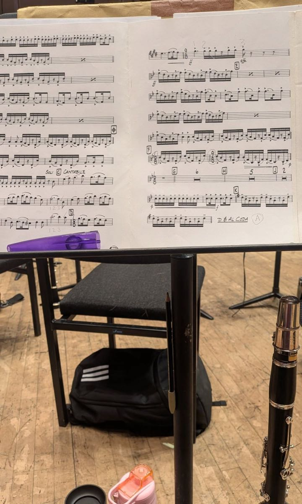
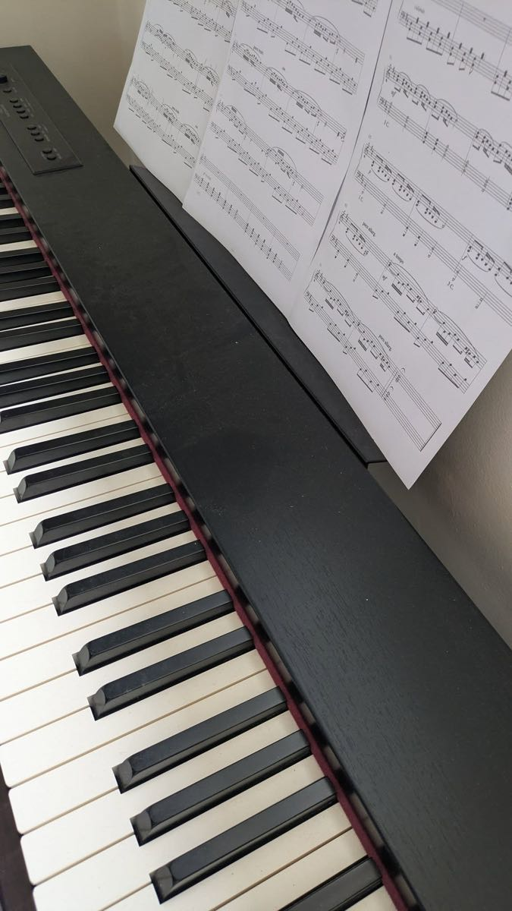
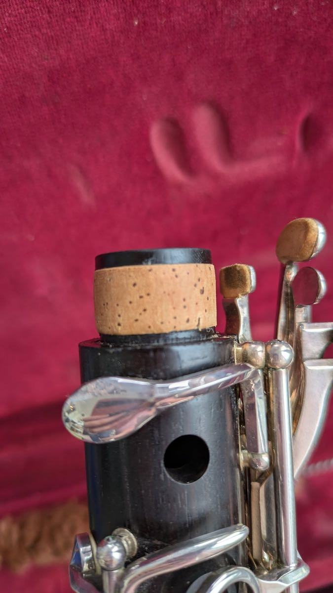
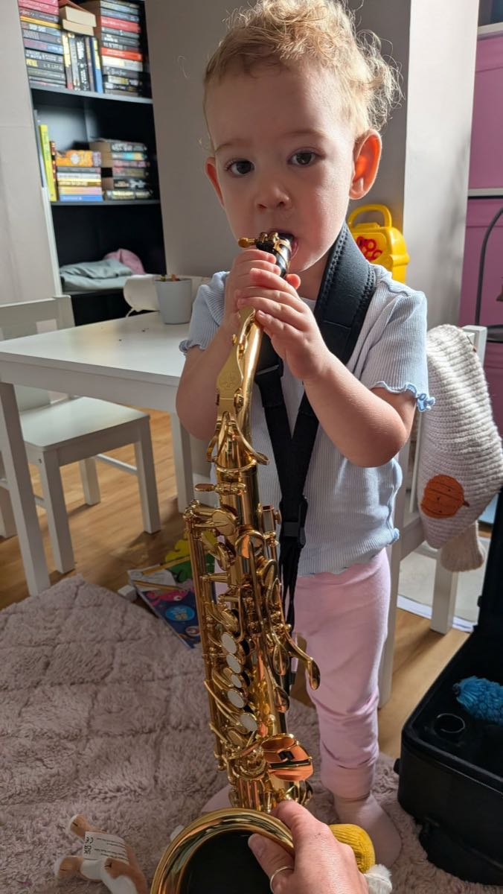

On stage with Bardi Wind Orchestra
Loved playing with the orchestra again, including a bit of the Cantina Band from Star Wars at De Montfort Hall, Leicester.
Hi, I'm Emma. I teach clarinet, piano, saxophone and flute to children and adults, in person in Worcester or online.
Whether you're starting from scratch, working through your grades, or picking up the dusty instrument from the loft, lessons are relaxed, encouraging and built around you.
From first notes to solo repertoire.
Reading, technique and pieces you'll love playing.
Tone, embouchure and plenty of fun tunes.
Graded pathways for young players and adults.
“Emma’s a brilliant music teacher. She is really calm, patient and encouraging. She’s taught my daughter flute and piano for a few years and has supported her to both enjoy music and progress through her grades. I highly recommend Emma for both children and adults.”
“Emma is very patient with mature learners. She makes the lessons engaging and age appropriate. I found her online lessons really suited me.”
“Emma was a fantastic teacher from the moment I walked in. She made the lessons very approachable and broke it down when I was struggling with my embouchure. Would fully recommend for new students and progressing players!!”


Loved playing with the orchestra again, including a bit of the Cantina Band from Star Wars at De Montfort Hall, Leicester.

First repair done in a while: a worn, cracking tenon cork replaced and good as new.

Back to teaching with plenty of availability, starting right away. It's never too early to start!
There's plenty of availability and flexibility with lessons. Give me a call, send a text, or drop me an email and we'll get something arranged.
Don't have an instrument yet? I have a few you can rent while you try it out.